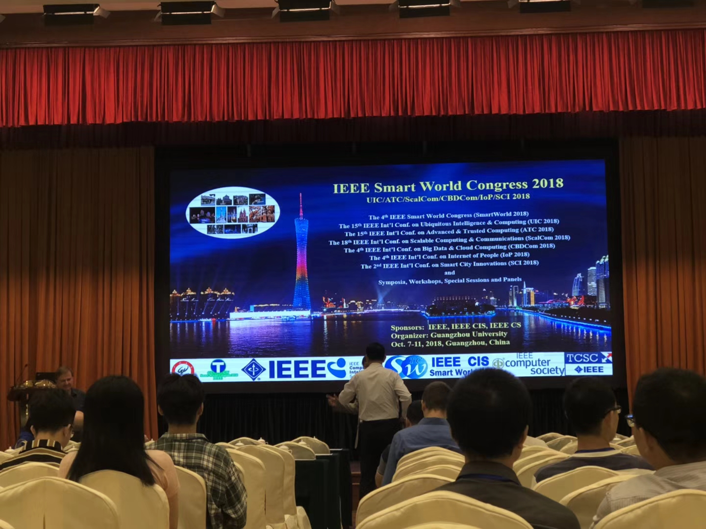
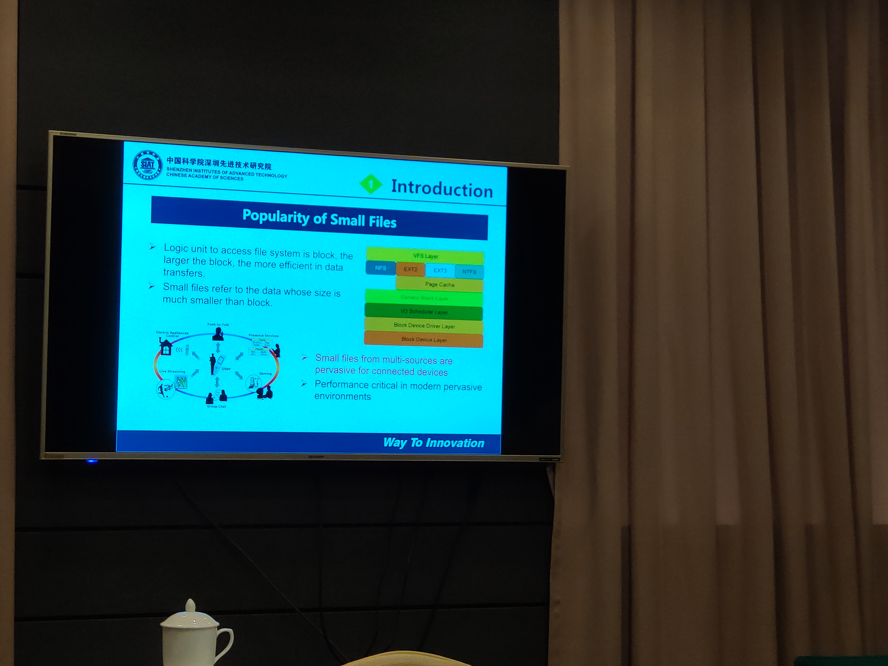

UIC会议心得
有段时间没更博了，这段时间出了趟差，去广州参加IEEE Smart World大会中的UIC会议的答辩。所以这篇博客就讲下一个人出差答辩的经历。

国庆节1号凌晨0点11分导师给我发QQ问我能否用英文参加答辩，了解我的人都知道我英语真的很差，英语中我的口语最差，但我还是答应了，实在不想放弃这个机会。于是当天还在老家吃酒的我便立马去打印出来了论文，论文我暑假就读过完整版，再次上手虽然问题不大，但要演讲就又是一回事了。那一整天在忙论文的分段整理和买来回车票、订酒店这类事。由于是一个人出差，以前从来没有过，我相当重视这件事。

琐事处理完后便要认真准备答辩事宜了，我改签了返程火车票，3号上午便回到了学校。对着国庆前自己做的PPT练习，但操着一口不熟练的英语读这篇论文要花掉我30分钟去，这在这样的会议上是不被允许的。我所在的这场会议时长两小时，共六篇论文，平均一篇20分钟。接下来的事便是删演讲稿，原本之前做PPT时还在抱怨为什么导师为什么要删除启发式规则这节的内容，搞得论文都不对称了，结果到自己删演讲稿时懵逼了，感觉都是重点，哪里都删不了，在寝室删了一天也才只是从2300字删到1900多字。上楼找贺巩山大佬也只删到1700多字，模拟演讲时计时还要19分钟，很是头痛。最后是女朋友提醒，按照PPT去讲，而不是按照演讲稿去动PPT。这下一下就通了，一下就删掉了之前不舍得删的所谓的重点，最后删到了1400字。

由于英语口语太差，时间紧迫，一些不会发的音没时间去查阅词典，就很感谢各位大佬给我一句话一句话的语音发给我，跟着大佬的语音练习就很快的能够熟练朗读了。女朋友帮我写了开场白和结束语，还有每部分的串词。最后想了两个万能答案并且疯狂练习了两三天就准备出发了。

广州我有15年没去过了，也很是期待，会场在广东大厦，中山纪念堂旁边，在酒店安顿下来后便去到会场给老师拿投稿的发票，也熟悉下会场。晚上去点都德吃了个晚饭，第二天一上午还是继续练习。下午提前去到了会场，与左右的学长们聊了起来，学长都是博士，分别来自东北大学和西安电子科技大学，人都蛮好的。一点半会议正式开始，人很少，就只有答辩的几个，我是第二个上场答辩的，一切都很是顺利，老师唯独没有问我问题，不到20分钟便结束了我的答辩。会议结束后在场下与主持和学长学姐们边喝下午茶边聊天，学习到了不少。其余会场大都是外国人，各类大型会议，我参加的只是其中一个很小的会议，那种大型会议是会怼人的，提的问题都很尖锐。

离开会场便立刻前往腾讯微信总部，我向往的一个地方。晚上在广州塔转了转便差不多准备返程了。第一次一个人出差，很是平淡，没了大二大三时跟着老师去北京打蓝桥杯决赛时的激动。只想完成好导师交给我的任务，一个人玩也是很没意思的一件事，可能出差本身就是这样吧！